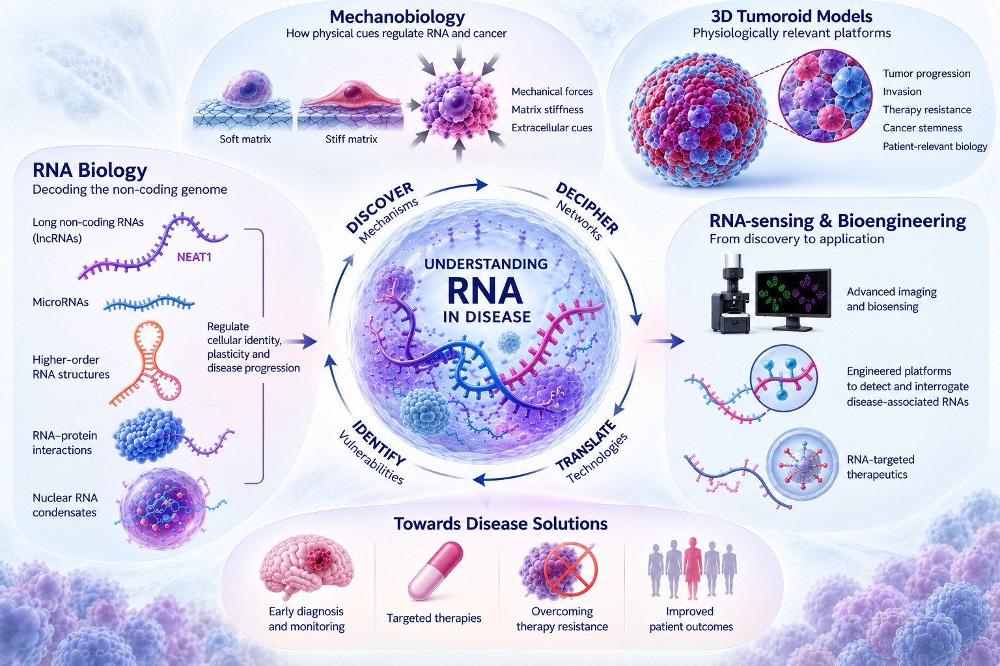

At the Disease Engineering and Advanced RNA Biology (DEAR) Lab, based at NUCSER, NITTE (Deemed to be University), Karnataka, we seek to understand how RNA governs disease and harness this knowledge to engineer innovative solutions for cancer and other intractable diseases.
Our research sits at the intersection of RNA biology, cancer biology, mechanobiology, and bioengineering. We investigate the complex regulatory landscape of non-coding RNAs, including long non-coding RNAs (lncRNAs) and microRNAs, as well as their higher-order structures, interactions, and dynamic organization within cells. By deciphering how these RNA networks influence cellular identity, plasticity, and disease progression, we aim to uncover previously unrecognized vulnerabilities in cancer.
A key focus of our work is understanding how the physical microenvironment shapes RNA-mediated regulation of aggressive cancers. Using biomimetic 3D tumoroid models, we investigate how mechanical cues such as matrix stiffness and cellular forces reshape RNA programs and contribute to tumor progression, invasion, and therapy resistance, with a particular focus on glioblastoma.
We further integrate advanced RNA-sensing and bioengineering technologies to move from discovery to application — developing approaches that can detect, interrogate, and ultimately manipulate disease-associated RNA networks.
Our goal is to move from understanding RNA to engineering disease solutions.
